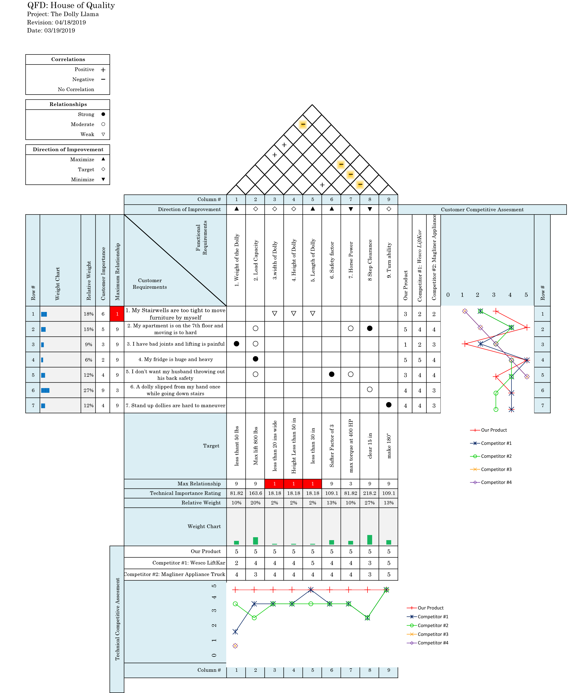
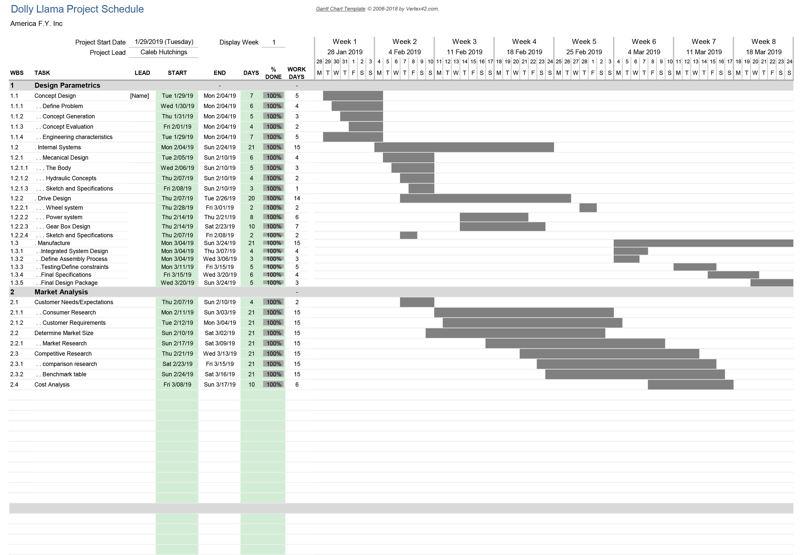

Motorized Dolly
Click on the image below to view the PowerPoint presentation for this project, dubbed the "Dolly Llama":
For this project, we were tasked with creating a product at our discretion, which would fulfill a market need. We decided to produce a motorized dolly which could be used to more easily traverse stairs while limiting strain on the consumer. The first task was to show a "House of Quality" to determine what kind of design would be best in order to satisfy customer requirements:
After a design concept was chosen, tasks were delegated to the appropriate team in a logical order. To do this, a Work Breakdown Sheet was developed, as shown below:
Predominantly, the focus of the project was to learn and implement the design methodologies of an engineering project. The following image is the Gantt Chart for the project, showing the scheduled tasks and when they should be completed:
While this project was never actually manufactured, all drawings were completed and were ready to manufacture according to specs.
To view the report associated with this project, CLICK HERE .
I learned how to take a project from merely recognizing a problem all the way through the design phase. Figuring out how to traverse every step along the way. I learned that doing market research is important, determining if there is a solution that could be created within the scope of the budgetary concerns of the target demographic, implementing the best solutions and maintaining not only a monetary budget, but also a temporal one.